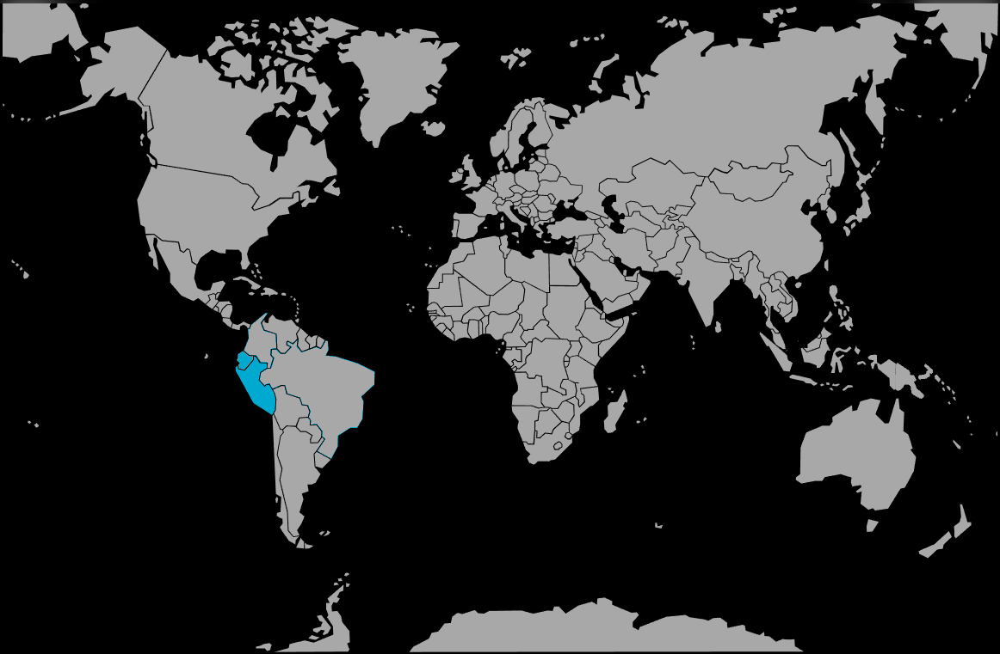

Systématique
- Ordre : Cichliformes
- Famille : Cichlidae
- Genre : Andinoacara
- Espèce : Andinoacara rivulatus
Andinoacara rivulatus est un grand cichlidé sud‑américain originaire des rivières côtières de l’Équateur et du nord du Pérou, connu sous le nom de « Green terror » en raison de ses couleurs intenses et de son caractère affirmé.
Le corps massif présente une base beige à verdâtre recouverte d’écailles aux reflets bleu‑vert métalliques, souvent bordées de blanc ou d’orange sur les nageoires impaires; les mâles peuvent dépasser 20–25 cm, avec des individus approchant les 30 cm dans de grands bacs.
Espèce fortement territoriale, surtout à l’âge adulte et en période de reproduction; en aquarium, elle domine rapidement les autres poissons et ne convient qu’à des bacs spacieux avec des colocataires robustes et soigneusement choisis.
Andinoacara rivulatus vit naturellement à proximité du fond et des zones rocheuses, où il délimite un territoire; en captivité, il exploite surtout la moitié inférieure et médiane du bac, utilisant roches, racines et caches comme repères.
Mode : ovipare, pondeur sur substrat découvert; la femelle dépose plusieurs centaines d’œufs sur une pierre ou un support dur, que le mâle féconde immédiatement.
Soins parentaux : la femelle ventile et protège la ponte puis les larves, tandis que le mâle défend activement le territoire; les alevins forment un nuage serré autour des parents jusqu’à l’autonomie.
Dimorphisme sexuel : les mâles sont plus grands et plus colorés, avec une bosse nucale marquée, des nageoires dorsale et anale plus allongées et des liserés colorés sur les nageoires; les femelles restent plus petites, moins contrastées et sans bosse frontale prononcée.
Espérance de vie : en aquarium bien géré, la longévité se situe généralement entre 8 et 10 ans, avec des individus pouvant vivre davantage dans d’excellentes conditions.
L’espèce fréquente des rivières côtières et pré‑montagnardes, avec des fonds de graviers, de roches et de sédiments, où elle trouve des supports de ponte et des abris; les eaux sont le plus souvent douces à légèrement minéralisées, à courant lent à modéré.
Répartition
Origine naturelle :
- Bassins des rivières Guayas, Santa Rosa, Zarumilla et Tumbes sur la côte pacifique de l’Équateur et du nord du Pérou.
- Espèce remplacée par des taxons proches dans certains bassins voisins, comme Andinoacara blombergi au nord et A. stalsbergi plus au sud.
- Populations introduites signalées dans quelques pays, notamment au Mexique et en Indonésie.
En milieu naturel, ce cichlidé occupe des tronçons à courant modéré, avec de nombreux blocs rocheux et un substrat stable pour la ponte.
Paramètres de maintenance
Température : 25 à 28 °C.
pH : 6,0 à 7,5, de légèrement acide à neutre, en évitant les variations brutales.
GH : 5 à 15 °dGH, eau douce à moyennement dure.
Courant : faible à modéré, avec une filtration puissante et des changements d’eau réguliers pour maintenir une charge organique basse.
Volume conseillé : au minimum 450 L pour un couple ou un petit groupe, avec décor solide, nombreuses cachettes et zones clairement délimitées.
Régime alimentaire
Régime : omnivore à forte tendance carnivore; dans la nature, il consomme des invertébrés, de petits organismes aquatiques et des éléments végétaux ou détritiques.
En aquarium, il accepte volontiers granulés et sticks riches en protéines, complétés par des proies congelées ou vivantes (moules, crevettes, vers, insectes aquatiques) et une part de végétal pour éviter les déséquilibres digestifs.
Une alimentation variée distribuée en portions modérées permet de limiter les problèmes de pollution de l’eau, fréquents avec les grands cichlidés voraces.